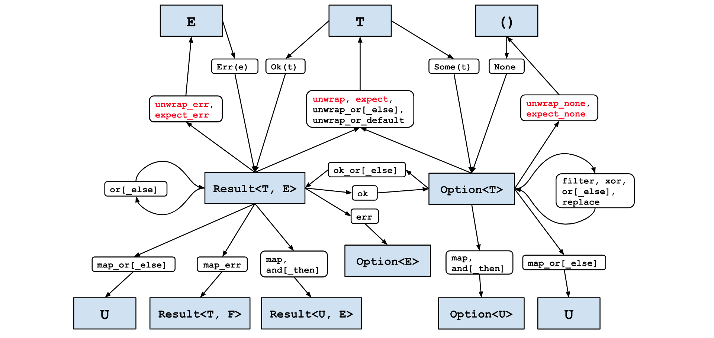

Effective Rust（Rust效率之道）
35种提高你Rust代码的具体方法
介绍
"The code is more what you'd call 'guidelines' than actual rules." – Hector Barbossa
斯科特·迈耶斯的《Effective C++》因为引入了一种新式的编程书籍风格而取得非凡的成功，这种风格专注于一系列从C++软件开发实际经验中学到的指导规则。值得注意的是，这些指导原则不仅解释它们存在的必要性而且还允许读者在特定的场景自己决定是否需要打破这些指导规则。
《Effective C++》的第一版出版于1992年，那时的C++语言虽然年轻，但已经是一种包含许多潜在问题的微妙语言；拥有一个指南来指导不同特性之间相互的作用是必不可少的。
相比之下，Rust如今是正值少年，相比C++它几乎不包含潜在的问题。其类型系统的强度一致性能确保如果一个Rust程序编译通过了，它就已经有很大的概率可以正常运行 —— 这种现象以前只在更学术化、不那么容易感知到的语言中观察到，比如Haskell。
Rust安全性——包括类型安全和内存安全 —— 虽然有代价。Rust因其学习曲线陡峭而闻名，入门者必须经历与借用检查器斗争、重新设计数据结构以及对生命周期感到困惑的入门仪式。一个编译通过的Rust程序很大概率可以非常健壮的运行，但让它编译通过内心所遭受的斗争是真实的——即使Rust编译器提供的错误诊断非常有帮助。
因此，这本书的目标读者与其他《Effective
Rust的安全性也导致了完全没有标题为“永不……”的项目。如果你真的不应该做某事，编译器通常会阻止你这么做。（译者备注：这就是Rust编译器的自信，不该干的，不会让你干）
尽管如此，文本仍然假定读者对语言的基础有所了解。使用的是2018版的Rust，并使用稳定的工具链。
用于代码片段和错误消息的具体rustc版本是1.60。Rust现在已经足够稳定（并有足够的向后兼容保证），代码片段不太可能需要为后续版本做更改，但错误消息可能会因你的编译器版本而有所不同。
本文还有许多参考C++以及与C++进行比较的地方，因为这可能是最接近的等效语言（特别是具有C++11的移动语义），也是Rust新手最可能遇到的前一种语言。
所有的项目被分为如下六个片段：
- Types(类型)：围绕Rust核心系统的建议
- Concepts(概念)：Rust设计的核心概念
- Dependencies(依赖)：关于如何使用Rust的包生态系统的建议（更多的是对cargo的理解和使用）
- Tools(工具)：关于如何通过除了Rust编译器以外的工具来改进代码的建议。
- Asynchronous Rust(异步Rust)：使用Rust async机制时的一些建议
- Beyond Standard Rust(额外的Rust)：当你需要在Rust的标准、安全环境之外工作时的建议。（更多的是unsafe的一些建议）
虽然“概念”部分可以说比“类型”部分更为基础，但刻意放在第二位，以便从头到尾阅读的读者先建立一些信心。（其实我们懂作者这句话，从我的理解，应该是第二部分也给一点简单的东西，好让读者有继续读下去的信心）
Types
这本书的第一部分涵盖了围绕Rust类型系统的建议。这个类型系统比其他主流语言的类型系统更具表达力；它与诸如OCaml或Haskell这样的“学术”语言有更多共同之处。
其中一个核心部分是Rust的枚举类型，这比其他语言中的枚举类型具有更高的表达力，并且允许使用代数数据类型。
Rust类型系统的另一个核心支柱是特征类型（trait type）。特征大致相当于其他语言中的接口类型，但它们也与Rust的泛型（项目12）相关联，以允许在没有运行时开销的情况下重用接口。
条目 1: 使用类型系统表达你的数据结构
"who called them programers and not type writers" – @thingskatedid
Rust类型系统的基础对于来自另一种静态类型编程语言（如C++、Go或Java）的人来说相当熟悉。这里有一系列具体大小的整数类型，包括有符号（i8、i16、i32、i64、i128）和无符号（u8、u16、u32、u64、u128）。
还有有符号（isize）和无符号（usize）整数，其大小与目标系统上的指针大小相匹配。Rust不是一种需要在指针和整数之间进行大量转换的语言，因此这种描述并不真正相关。然而，标准集合以usize（来自.len()）返回它们的大小，所以集合索引意味着usize值相当常见——从容量角度看这显然是可以的，因为系统上的内存地址数量多于内存中集合的项目数量。
整数类型确实给我们提供了第一个暗示，即Rust是一个比C++更严格的世界——试图将（i32）放入（i16）的容器中会生成一个编译时错误。
#![allow(unused)] fn main() { let x: i32 = 42; let y: i16 = x; }
这段代码会产生如下错误：
error[E0308]: mismatched types
--> use-types/src/main.rs:14:22
|
14 | let y: i16 = x;
| --- ^ expected `i16`, found `i32`
| |
| expected due to this
|
help: you can convert an `i32` to an `i16` and panic if the converted value doesn't fit
|
14 | let y: i16 = x.try_into().unwrap();
| ++++++++++++++++++++
这令人非常安心：Rust不会在程序员进行风险操作时静静地坐在那里。Rust不但显示出有更严格的规则，而且它也有有用的编译器消息，指出如何遵守这些规则。建议的解决方案引发了一个问题，即如何处理转换可能改变值的情况，我们稍后还会在错误处理（条目 4）和使用panic!（条目 18）上有更多讨论。
Rust还不允许一些可能看似“安全”的操作：
#![allow(unused)] fn main() { let x = 42i32; // Integer literal with type suffix let y: i64 = x; }
这段代码会产生如下错误：
error[E0308]: mismatched types
--> use-types/src/main.rs:23:22
|
23 | let y: i64 = x;
| --- ^ expected `i64`, found `i32`
| |
| expected due to this
|
help: you can convert an `i32` to an `i64`
|
23 | let y: i64 = x.into();
| +++++++
在这里，建议的解决方案并没有提出错误处理的问题，但转换仍然需要是显式的。我们稍后将更详细地讨论类型转换（条目 6）。
继续介绍基本的原始类型，Rust包括用于布尔值的bool类型，浮点类型（f32、f64）以及类似于C语言中的void的单位类型()。
更值得注意的是，Rust具有char字符类型，它存储一个Unicode值，类似于Go的rune类型。虽然内部存储为4字节，但Rust不允许将其自由地转换为32位整数或从32位整数转换得来
这种类型系统的严谨性强制你在代码中明确表达 —— 一个u32值与一个char不同，与一串UTF-8字节不同，与一串任意字节不同。定义你正在操作的内存取决于你。乔尔·斯波尔斯基（Joel Spolsky）关于Unicode的著名博客文章可以帮助理解这些差异。
虽然Rust提供了帮助方法来转换这些不同的类型，但它们的签名要求你管理或明确忽略转换错误的风险。例如，任何Unicode代码点都可以用32位表示，因此将'a'转换为u32是允许的。然而，从u32转换为char则更复杂，因为可能存在无效的Unicode代码点。
char::from_u32返回一个Option<char>，强制要求调用者来处理错误的情况char::from_u32_unchecked假定输入是有效的Unicode代码点，这样就可以避免运行时检查，但是它的结果是需要标记位unsafe的，强制调用者也是unsafe的(条目 16相关)
聚合类型（Aggregate Types）
继续讨论聚合类型，Rust有：
- 数组（Array），它们包含多个单一类型的实例，其中实例的数量在编译时已知。例如，[u32; 4] 是连续的四个4字节整数。
- 元组（Tuples），它包含很多异构类型的实例，其中实例的数量和类型在编译时已知。例如，(WidgetOffset, WidgetSize, WidgetColour)。如果元组中的类型不是独特的 —— 例如(i32, i32, &'static str, bool) —— 最好给每个元素一个名字，并使用结构体
- 结构体（Structs），它们也包含在编译时已知的异质类型的实例，但允许通过名称引用整体类型和各个字段。
元组结构是结构体和元组的混合体：整体类型有一个名称，但个别字段没有名称——它们通过数字来引用，例如：s.0, s.1 等。
#![allow(unused)] fn main() { struct TextMatch(usize, String); let m = TextMatch(12, "needle".to_owned()); assert_eq!(m.0, 12); }
这引出了Rust类型系统中的王冠上的宝石——enum。
在其基本形式中，很难看出有什么值得激动的地方。与其他语言类似，枚举允许你指定一组互斥的值，可能附带有数字或字符串值。
#![allow(unused)] fn main() { enum HttpResultCode { Ok = 200, NotFound = 404, Teapot = 418, } let code = HttpResultCode::NotFound; assert_eq!(code as i32, 404); }
因为每一个enum定义创建了不同的类型，这个可以提高如下函数的可读性以及维护性：
#![allow(unused)] fn main() { print_page(/* both_sides= */ true, /* colour= */ false); }
上述函数的使用enum的新版本：
#![allow(unused)] fn main() { pub enum Sides { Both, Single, } pub enum Output { BlackAndWhite, Colour, } pub fn print_page(sides: Sides, colour: Output) { // ... } }
这种方式类型安全更加有保障，而且给调用者来说也是更加直观的。
#![allow(unused)] fn main() { print_page(Sides::Both, Output::BlackAndWhite); }
不像bool版本，如果库的使用者不小心将参数的顺序搞错了，那么编译器就会立即抱怨，让你知道你犯了一个错误。
error[E0308]: mismatched types
--> use-types/src/main.rs:89:20
|
89 | print_page(Output::BlackAndWhite, Sides::Single);
| ^^^^^^^^^^^^^^^^^^^^^ expected enum `enums::Sides`, found enum `enums::Output`
error[E0308]: mismatched types
--> use-types/src/main.rs:89:43
|
89 | print_page(Output::BlackAndWhite, Sides::Single);
| ^^^^^^^^^^^^^ expected enum `enums::Output`, found enum `enums::Sides`
（使用新类型模式（条目 7）来包装布尔值也可以实现类型安全和可维护性；如果语义将始终是布尔值，通常最好使用该方法，并且如果将来可能出现新的替代项（例如 Sides::BothAlternateOrientation），则使用枚举。）
Rust的枚举的类型安全性在匹配表达式中继续体现：
#![allow(unused)] fn main() { let msg = match code { HttpResultCode::Ok => "Ok", HttpResultCode::NotFound => "Not found", // forgot to deal with the all-important "I'm a teapot" code }; }
这段代码会产生如下错误：
error[E0004]: non-exhaustive patterns: `Teapot` not covered
--> use-types/src/main.rs:65:25
|
51 | / enum HttpResultCode {
52 | | Ok = 200,
53 | | NotFound = 404,
54 | | Teapot = 418,
| | ------ not covered
55 | | }
| |_____- `HttpResultCode` defined here
...
65 | let msg = match code {
| ^^^^ pattern `Teapot` not covered
|
= help: ensure that all possible cases are being handled, possibly by adding wildcards or more match arms
= note: the matched value is of type `HttpResultCode`
编译器强制程序员考虑枚举表示的所有可能性，即使结果只是添加一个默认分支 _ => {}。（需要注意的是，现代C++编译器也可以警告缺少枚举switch分支。）
带字段的enums
Rust枚举功能的真正威力来自于每个变体都可以携带数据，使其成为代数数据类型（ADT）。对于主流语言的程序员来说，这可能不太熟悉；从C/C++的角度来看，它就像是枚举与联合的组合——只不过是类型安全的。
这意味着程序数据结构的不变性可以编码到Rust的类型系统中；不符合这些不变性的状态甚至不会编译通过。一个设计良好的枚举能够使创作者的意图清晰地传达给人类和编译器：
#![allow(unused)] fn main() { pub enum SchedulerState { Inert, Pending(HashSet<Job>), Running(HashMap<CpuId, Vec<Job>>), } }
仅仅从类型定义，我们可以合理地猜测，任务会在挂起状态中排队，直到调度程序完全激活，然后它们会分配给每个CPU池。
这突显了这个项目的中心主题，即利用Rust的类型系统来表达与软件设计相关的概念。
一个明显的迹象表明这种情况并未发生是，当一些字段或参数的有效性需要解释时，会有注释说明：
#![allow(unused)] fn main() { struct DisplayProps { x: u32, y: u32, monochrome: bool, // `fg_colour` must be (0, 0, 0) if `monochrome` is true. fg_colour: RgbColour, } }
这是一个非常适合用包含数据的枚举替换的候选对象：
#![allow(unused)] fn main() { #[derive(Debug)] enum Colour { Monochrome, Foreground(RgbColour), } struct DisplayProperties { x: u32, y: u32, colour: Colour, } }
这个小例子说明了一个关键建议：使类型中的无效状态来表达无效。只支持有效值组合的类型意味着编译器会拒绝整类错误，从而产生更小、更安全的代码。
Options 和 Errors
回到枚举的强大之处，有两个概念是如此常见，以至于Rust包含了内置的枚举类型来表达它们。
第一个概念是Option：要么有特定类型的值（Some(T)），要么没有（None）。对于可能不存在的值，始终使用Option；永远不要退回到使用标记值（-1、nullptr等）来尝试表示相同的概念。
然而，还有一个微妙的要考虑的地方。如果你处理的是一组东西，你需要决定是否拥有零个东西在集合中与没有集合是相同的。对于大多数情况，这个区别并不存在，你可以直接使用Vec
然而，确实存在其他少见的情况，需要使用Option<Vec
一个常见的临界情况是可能不存在的字符串 - 使用 "" 还是 None 更合理来表示值的缺失？两种方式都可以，但 Option
第二个常见概念源自错误处理：如果一个函数失败了，该如何报告这个失败？在历史上，特殊的标记值（例如来自Linux系统调用的 -errno 返回值）或全局变量（POSIX系统的 errno）被使用。最近，支持从函数返回多个或元组返回值的语言（如Go）可能有一个约定，即在错误为非“零”时返回（结果，错误）对。
在Rust中，总是将可能失败的操作的结果编码为 Result<T, E>。T 类型保存成功的结果（在 Ok 变体中），E 类型在失败时保存错误详情（在 Err 变体中）。使用标准类型可以清晰地表达设计意图，并允许使用标准转换（条目3）和错误处理（条目4）；它还使得通过 ? 操作符来简化错误处理成为可能。
条目2：使用类型系统来表达常见行为
Item 1 讨论了如何使用在类型系统中表达数据结构；本项目将讨论如何使用类型系统来表达常见行为。
方法（Methods）
首先，Rust类型系统的第一个行为就是向数据结构中添加方法：这些方法作用于某个类型的成员，由 self 标识。这种方式将相关数据和代码以面向对象的方式封装在一起，与其他语言类似；然而，在 Rust 中，方法不仅可以添加到结构类型，还可以添加到枚举类型，这与 Rust 枚举的普遍性质保持一致（条目 1）。
#![allow(unused)] fn main() { enum Shape { Rectangle { width: f64, height: f64 }, Circle { radius: f64 }, } impl Shape { pub fn area(&self) -> f64 { match self { Shape::Rectangle { width, height } => width * height, Shape::Circle { radius } => std::f64::consts::PI * radius * radius, } } } }
方法的名称为它所表示的行为提供了一个标签，而方法签名为其输入和输出提供了类型信息。方法的第一个输入将是 self 的某个变体，指示该方法可能对数据结构执行的操作：
- &self: 该参数表示方法可能读取数据结构的数据，但是并不会修改数据结构的数据内容
- &mut self: 该参数表示方法可能修改数据结构的数据内容
- self: 该参数表示方法消耗数据结构的数据，这意味着调用者将无法再次使用数据结构（移动语意）
抽象行为 （Abstracting Behaviour）
调用一个方法总是导致执行相同的代码；从一次调用到另一次调用，变化的只是方法操作的数据。这涵盖了许多可能的场景，但如果代码需要在运行时变化怎么办？
Rust 在其类型系统中包含了几个特性以适应这种情况，本节将探讨这些特性。
（函数指针）Function Pointers
最简单的行为抽象就是[函数指针}(https://doc.rust-lang.org/std/primitive.fn.html): 指向（仅仅是）一些代码的指针，其类型反映了函数签名。该类型在编译时进行检查，因此到程序运行时，该值仅为一个指针的大小。
#![allow(unused)] fn main() { fn sum(x: i32, y: i32) -> i32 { x + y } // Explicit coercion to `fn` type is required... let op: fn(i32, i32) -> i32 = sum; }
函数指针没有与之相关联的其他数据,因此它们可以通过各种方式被当作值来处理:
#![allow(unused)] fn main() { fn sum(x: i32, y: i32) -> i32 { x + y } // `fn` types implement `Copy` let op1 = op; let op2 = op; // `fn` types implement `Eq` assert!(op1 == op2); // `fn` implements `std::fmt::Pointer`, used by the {:p} format specifier. println!("op = {:p}", op); // Example output: "op = 0x101e9aeb0" }
需要注意的一个技术细节：需要使用显示强制类型转换为 fn 类型，因为仅仅使用函数名称你不会给你提供 fn 类型。
#![allow(unused)] fn main() { let op1 = sum; let op2 = sum; // Both op1 and op2 are of a type that cannot be named in user code, // and this internal type does not implement `Eq`. assert!(op1 == op2); }
Compiling playground v0.0.1 (/playground)
error[E0369]: binary operation `==` cannot be applied to type `fn(i32, i32) -> i32 {main::sum}`
--> src/main.rs:19:18
|
19 | assert!(op11 == op22);
| ---- ^^ ---- fn(i32, i32) -> i32 {main::sum}
| |
| fn(i32, i32) -> i32 {main::sum}
|
help: use parentheses to call these
|
19 | assert!(op11(/* i32 */, /* i32 */) == op22(/* i32 */, /* i32 */));
| ++++++++++++++++++++++ ++++++++++++++++++++++
For more information about this error, try `rustc --explain E0369`.
error: could not compile `playground` (bin "playground") due to 1 previous error
相反,编译器错误表明该类型是类似于fn(i32, i32) -> i32 {main::sum}的东西,这是一种完全内部的编译器类型(即无法在用户代码中编写),它不仅标识了具体的函数,还标识了它的签名。换句话说,sum的类型同时编码了函数的签名和它的位置(出于优化原因);但是这种类型可以自动强制转换为fn类型(条目6)。
闭包（Closures）
裸函数指针是有一些限制的，因为裸函数指针唯一可用的输入就是作为参数值显示传递的输入。
例如，考虑到使用一个函数指针来修改切片的元素：
#![allow(unused)] fn main() { // In real code, an `Iterator` method would be more appropriate. pub fn modify_all(data: &mut [u32], mutator: fn(u32) -> u32) { for value in data { *value = mutator(*value); } } }
这个试用一些对切片简单的修改：
#![allow(unused)] fn main() { pub fn modify_all(data: &mut [u32], mutator: fn(u32) -> u32) { for value in data { *value = mutator(*value); } } fn add2(v: u32) -> u32 { v + 2 } let mut data = vec![1, 2, 3]; modify_all(&mut data, add2); assert_eq!(data, vec![3, 4, 5,]); }
然而，如果我们的修改需要依赖外部的数据状态修改，这个就不太可能使用函数指针来做到这个事情。
#![allow(unused)] fn main() { pub fn modify_all(data: &mut [u32], mutator: fn(u32) -> u32) { for value in data { *value = mutator(*value); } } let amount_to_add = 3; fn add_n(v: u32) -> u32 { v + amount_to_add } let mut data = vec![1, 2, 3]; modify_all(&mut data, add_n); assert_eq!(data, vec![4, 5, 6,]); }
Compiling playground v0.0.1 (/playground)
error[E0434]: can't capture dynamic environment in a fn item
--> src/main.rs:9:13
|
9 | v + amount_to_add
| ^^^^^^^^^^^^^
|
= help: use the `|| { ... }` closure form instead
For more information about this error, try `rustc --explain E0434`.
error: could not compile `playground` (bin "playground") due to 1 previous error
这个错误信息表明，我们正确的选择是使用闭包来代替函数指针：闭包是一段看起来像函数定义主体的代码(一个lambda表达式),只不过:
- 它可以作为表达式的一部分，因为可以不需要一个单独的名称来引用它
- 输入的参数使用
||包裹，类似|param1, param2|(这里参数的关联类型通常可以由编译器自动推导) - 闭包还可以捕获上下文的变量
#![allow(unused)] fn main() { let amount_to_add = 3; let add_n = |y| { // a closure capturing `amount_to_add` y + amount_to_add }; let z = add_n(5); assert_eq!(z, 8); }
为了（粗略地）理解捕获是如何进行工作的，假设编译器创建了一个一次性的内部类型，它包含lambda表达式中提到的环境上下文的所有部分。创建闭包是，会创建临时的类型来保存相关值，并且当调用闭包时，该实例将其附加在调用上下文：
#![allow(unused)] fn main() { let amount_to_add = 3; // *Rough* equivalent to a capturing closure. struct InternalContext<'a> { // references to captured variables amount_to_add: &'a u32, } impl<'a> InternalContext<'a> { fn internal_op(&self, y: u32) -> u32 { // body of the lambda expression y + *self.amount_to_add } } let add_n = InternalContext { amount_to_add: &amount_to_add, }; let z = add_n.internal_op(5); assert_eq!(z, 8); }
这些值在上下文保存的通常是不可变引用，但是也可以作为可变引用，或者是所有权的转移。这些值的生命周期是由闭包的生命周期来决定的。（通过使用 move 关键字来进行所有权的移动）
回到我们modify_all的示例中，在使用函数指针的地方抱怨不能使用闭包：
#![allow(unused)] fn main() { pub fn modify_all(data: &mut [u32], mutator: fn(u32) -> u32) { for value in data { *value = mutator(*value); } } let amount_to_add = 3; let mut data = vec![1, 2, 3]; modify_all(&mut data, |y| y + amount_to_add); assert_eq!(data, vec![4, 5, 6,]); }
Compiling playground v0.0.1 (/playground)
error[E0308]: mismatched types
--> src/main.rs:9:27
|
9 | modify_all(&mut data, |y| y + amount_to_add);
| ---------- ^^^^^^^^^^^^^^^^^^^^^ expected fn pointer, found closure
| |
| arguments to this function are incorrect
|
= note: expected fn pointer `fn(u32) -> u32`
found closure `{closure@src/main.rs:9:27: 9:30}`
note: closures can only be coerced to `fn` types if they do not capture any variables
--> src/main.rs:9:35
|
9 | modify_all(&mut data, |y| y + amount_to_add);
| ^^^^^^^^^^^^^ `amount_to_add` captured here
note: function defined here
--> src/main.rs:2:12
|
2 | pub fn modify_all(data: &mut [u32], mutator: fn(u32) -> u32) {
| ^^^^^^^^^^ -----------------------
For more information about this error, try `rustc --explain E0308`.
error: could not compile `playground` (bin "playground") due to 1 previous error
相反,接收闭包的代码必须接受某个 Fn* trait 的实例。
#![allow(unused)] fn main() { pub fn modify_all<F>(data: &mut [u32], mut mutator: F) where F: FnMut(u32) -> u32 { for value in data { *value = mutator(*value); } } let amount_to_add = 3; let mut data = vec![1, 2, 3]; modify_all(&mut data, |y| y + amount_to_add); assert_eq!(data, vec![4, 5, 6,]); }
Rust有三种不同的 Fn* trait，他们之间表达了该环境变量捕获的一些区别：
FnOnce：描述了只能调用一次的闭包，如果其环境变量的某些部分move进入闭包，那么move只能发生一次 - 对于原始的环境变量来说，这是一个所有权转移。所以该闭包智能被调用一次。FnMut：描述了可以多次调用的闭包，因为它是可变借用的，所以闭包可以修改其环境变量的部分。（但是不能被多个线程同时调用）Fn：描述了一个可以重复调用的闭包，并且它仅从环境中不可变地借用值。（可以被多个线程同时调用）
编译器会自动为代码中的任何lambda表达式实现这些Fn* trait中的适当子集；不可能手动实现这些trait的任何一个（和C++的operator()重载不同）。
回到上面闭包的粗略的心理模型，编译器自动实现的那些trait大致对应捕获的环境上下文是否具有：
FnOnce：任何可移动的值FnMut：任何可变的引用（&mut T）Fn：任何的不可变引用（&T）
上面列表中的后两个特征各自具有前面一个特征的特征界限，当你考虑使用闭包的时候，这是需要了解的。
- 如果某个闭包期望调用一次（通过
FnOnce来接收）,那么传递一个可以重复调用很多次的FnMut闭包也是完全可行的。 - 如果某个闭包期望调用多次（通过
FnMut来接收）,那么传递一个不需要改变其环境变量的Fn闭包也是完全可行的。
函数裸指针类型fn理论上也属于该列表的最后一个Fn，任何（非unsafe）fn类型会自动实现所有Fn* trait，因为它不从环境中借用任何内容，是符合所有Fn* trait的要求的。
因此，在编写接受闭包的代码时，请使用最通用的有效Fn* trait，以便于给调用者提供最大的灵活性 - 例如，接受FnOnce对于只调用一次的闭包。同样的建议，尽可能优选Fn* trait的函数bound，而不是使用裸指针函数的方式。
特征（Traits）
Fn* 特征比裸函数指针更灵活，但它们仍然只能描述单个函数的行为，即使这样也只能根据函数的签名来描述。
然而，trait在Rust类型系统中是描述这种行为的另一种机制。trait定义了一些公开可用的一组相关方法。特征中的每个方法也有一个名称，提供一个标签，允许编译器消除具有相同签名的方法的歧义，更重要的是，它允许程序员推断出该方法的意图。
Rust trait大致类似于 Go 和 Java 中的接口，或者 C++ 中的抽象类（所有虚拟方法，没有数据成员）。trait的实现必须提供所有方法（但请注意，trait定义可以包括默认实现，条目13），并且在这些实现的使用中可以有关联数据。这意味着代码和数据以某种面向对象的方式封装在一个公共抽象中。
接受 struct 并作为参数调用其方法的代码被限制为仅适用于该特定类型。如果有多种类型实现常见行为（实现共同的trait），那么定义封装该常见行为的trait并让代码使用该trait的方法而不是特定 struct 上的方法会更灵活。
与其他面向对象的语言出现的相同类型的建议：如果预期未来的灵活性，则更喜欢接受trait类型而不是具体类型。
有时，您想要在类型系统中区分某些行为，但无法将其表示为trait定义中的某些特定方法签名。例如，考虑对集合进行排序的trait；实现可能是稳定的（比较相同的元素将在排序前后以相同的顺序出现），但无法在 sort 方法参数中表达这一点。
在这种情况下，仍然值得使用类型系统来跟踪此需求，并使用marker trait。
#![allow(unused)] fn main() { pub trait Sort { /// Re-arrange contents into sorted order. fn sort(&mut self); } /// Marker trait to indicate that a [`Sortable`] sorts stably. pub trait StableSort: Sort {} }
marker trait没有方法，但实现仍然必须声明它正在实现该特征 - 这充当实现者的承诺：“我郑重宣誓，我的排序实现是稳定的”。然后，依赖于稳定排序的代码可以指定 StableSort trait bound，依靠系统来保留其不变性。使用marker trait来区分特征方法签名中无法表达的行为。
一旦行为作为trait被封装到 Rust 的类型系统中，就可以通过两种方式使用它：
- 作为
trait bound，它限制了编译时通用数据类型或方法可接受的类型，或者 - 作为
trait object。它限制了运行时可以存储或传递给方法的类型。
条目 12 更详细地讨论了trait bound和trait object之间的权衡。
trait bound指示由某种类型 T 参数化的通用代码只能在该类型 T 实现某些特定trait时使用。trait bound的存在意味着泛型的实现可以使用该特征中的方法，因为编译器将确保编译的任何 T 确实具有这些方法。这种检查发生在编译时，此时泛型是单态的（对于 C++ 的术语称为“模板实例化”）。
对目标类型 T 的这种限制是显式的，编码在trait bound中：trait只能由满足trait bound的类型实现。这与 C++ 中的等效情况形成对比，其中对 template
对显式trait bound的需求也意味着很大一部分泛型使用trait bound。要了解其中的原因，观察并考虑在 T 上没有trait bound的情况下可以使用 struct Thingtrait bound， Thing 只能执行适用于任何类型 T 的操作；这允许容器、集合和智能指针，但仅此而已。任何使用 T 类型的东西都需要一个trait bound。
#![allow(unused)] fn main() { pub fn dump_sorted<T>(mut collection: T) where T: Sort + IntoIterator, T::Item: Debug, { // Next line requires `T: Sort` trait bound. collection.sort(); // Next line requires `T: IntoIterator` trait bound. for item in collection { // Next line requires `T::Item : Debug` trait bound println!("{:?}", item); } } }
因此，这里建议使用trait bound来表达对泛型中使用的类型要求，这是很容易遵循的建议 - 无论如何，编译器都会强制你遵守它。
trait object是利用特征定义封装的另一种方式，但这里trait的不同可能实现是在运行时而不是编译时选择的。这种动态分派类似于 C++ 中虚拟函数的使用，并且 Rust 的底层具有与 C++ 中的大致类似的vtable对象。
trait object的这种动态方面还意味着它们始终必须通过引用（ &dyn Trait ）或指针（ Box<dyn Trait> ）间接处理。这是因为实现该特征的对象的大小在编译时是未知的 - 它可能是一个巨大的 struct 或一个很小的 enum - 所以没有办法正确分配的裸特征对象的内存空间。
trait object的trait不能具有返回 Self 类型的方法，因为使用trait object的预先编译的代码不知道 Self 可能有多大。
可能存在所有不同类型的T，具有通用方法 fn methodtrait可能允许实现无数的方法。这对于用作trait object的trait来说很好，因为可能调用的泛型方法的无限集在编译时变成了实际调用的泛型方法的有限集。对于trait object来说情况并非如此：在编译时可用的代码必须应对在运行时出现所有可能的 T 类型。
这两个限制 -- 不返回 Self 和没有泛型方法 -- 被结合到对象安全的概念中。只有对象安全特征才能用trait object。
条目 3: 避免在Option和Result类型上使用match操作
条目 1 阐述了enum的优点，并展示了如何使用match表达式强制程序员考虑所有可能性；这一条目探讨了在何种情况下应该避免显式地使用match表达式。
条目 1 还介绍了Rust标准库中非常常见的两个enum类型：
Option<T>：表示一个值可能存在Some，也可能不存在None。Result<T, E>：表示一个操作可能成功Ok，也可能失败Err。
对于这些特定的enum类型来说，显示地使用match通常会导致代码更加的冗长，而且这也不符合Rust的惯用风格。
一种情况，当我们只关心值存在的场景，而想要直接忽略值不存在的场景，如下的代码：
#![allow(unused)] fn main() { struct S { field: Option<i32>, } let s = S { field: Some(42) }; match &s.field { Some(i) => println!("field is {}", i), None => {} } }
对于这种场景来说，一个if let表达式更加的简洁，非常清晰：
#![allow(unused)] fn main() { struct S { field: Option<i32>, } let s = S { field: Some(42) }; if let Some(i) = &s.field { println!("field is {}", i); } }
然而，大多数时候，值的缺失以及相关的错误是程序员必须处理的问题。设计软件应对失败的路径是困难的，而且其中大部分是无法通过语法解决其根本复杂性 -- 具体来说，如果失败我们应该决定接下来需要如何处理。
在某些情况下,正确的决策是执行一种"鸵鸟战术",明确地不处理失败的情况。使用显式的match语句来做这件事将会过于啰嗦:
#![allow(unused)] fn main() { let result = std::fs::File::open("/etc/passwd"); let f = match result { Ok(f) => f, Err(_e) => panic!("Failed to open /etc/passwd!"), }; }
Option和Result类型提供了unwrap和expect方法，这两个方法在值存在的情况下返回值，否则会触发panic。这两个方法是match的简化版本，expect方法允许自定义错误信息，但无论哪种情况,生成的代码都更短更简单 - 错误处理被委托给了 .unwrap() 后缀(但仍然存在)。
#![allow(unused)] fn main() { let f = std::fs::File::open("/etc/passwd").unwrap(); }
明确一点:这些辅助函数也是会panic!，所以选择使用他们和选择panic!（条目 18）是一样的。
然后在很多情况下，正确的错误处理是将错误传递给调用者。这一点在编写库的时候尤为突出，因为该代码可能会在库作者无法预料的各种不同的环境中使用。为了让其他人的工作处理的更加容易一些，优先使用Resutl而不是Option，及时我们需要在不同的错误类型中进行转换（条目 4）
Result类型有 [#must_use]属性去强制库的使用者朝着预期的方向努力 -- 如果代码未使用返回的Result类型忽略了它，编译器会生成警告：
warning: unused `Result` that must be used
--> transform/src/main.rs:32:5
|
32 | f.set_len(0); // Truncate the file
| ^^^^^^^^^^^^^
|
= note: `#[warn(unused_must_use)]` on by default
= note: this `Result` may be an `Err` variant, which should be handled
显示使用 match允许一个错误进行传播，但是这里会造成冗余的样板代码（类似Go语言的错误处理方式）
#![allow(unused)] fn main() { pub fn find_user(username: &str) -> Result<UserId, std::io::Error> { let f = match std::fs::File::open("/etc/passwd") { Ok(f) => f, Err(e) => return Err(e), }; // ... } }
减少这会冗余样板代码的关键是Rust的问号运算符?。这个语法糖使得Err和return Err(...)表达式变成了一行代码：
#![allow(unused)] fn main() { pub fn find_user(username: &str) -> Result<UserId, std::io::Error> { let f = std::fs::File::open("/etc/passwd")?; // ... } }
对于Rust新手来说，这种写法有时候会让人不安：问号运算符不太容易一眼就能注意到，因此不太容易注意到代码的实际含义以及作用。然而，即使只有一个简单的字符，类型系统仍然可以很好的工作，确保可以覆盖相关类型的表达条目 1. - 这使得程序员可以关注到主线代码，而不用担心错误处理的细节。
甚者，这里相对于显示的方法调用也不会产生额外的代价，而且这些通用函数都会标记为#[inline]的方式，生成的代码会和显示的方法调用一样高效。
上述两个因素让你再选择处理Option和Result类型的时候，更倾向于使用if let和?运算符，而不是显式的match表达式。
在前面的示例中，错误类型是一致的，内部方法和外部方法使用的错误类型都是std::io::Error来表示错误，但是这种情况并不常见，一般来说一个函数会从一些子库中积累到不同的错误类型，而这些子库一般都是使用不同的错误类型的。
通常的错误映射转换会被在条目 4中讨论，但是现在，我们就用手动的方式进行转换：
#![allow(unused)] fn main() { pub fn find_user(username: &str) -> Result<UserId, String> { let f = match std::fs::File::open("/etc/passwd") { Ok(f) => f, Err(e) => { return Err(format!("Failed to open password file: {:?}", e)) } }; // ... } }
可以使用.map_err()转换显得更加的简洁更加符合Rust的风格。
#![allow(unused)] fn main() { pub fn find_user(username: &str) -> Result<UserId, String> { let f = std::fs::File::open("/etc/passwd").map_err(|e| format!("Failed to open password file: {:?}", e))?; // ... } }
更好的是，如果外部错误类型可以通过实现From trait（条目 5）来从内部类型进行创建，那么编译器就会自动转换类型，无需调用.map_err()。
这些方式的转换都是通用的，问号运算符可以说是在Rust转换Option和Result类型的大杀器，把它可以用到任何需要的地方
标准库提供了大量的转换函数来使得这一件事情变得很容易，详细的转换地图：下面红色的是可能发生panic!的方法：

一个比较通用的场景，当在处理引用的时候，上面没有覆盖到。举例，考虑如下结构体：
#![allow(unused)] fn main() { struct InputData { payload: Option<Vec<u8>>, } }
这个结构体的方法试图直接通过获取payload的引用去调用一个签名为(&[u8]) -> Vec<u8>加密函数，这样会失败：
#![allow(unused)] fn main() { impl InputData { fn encrypt(&self) -> Vec<u8> { encrypt(&self.payload.unwrap_or(vec![])) } } }
error[E0507]: cannot move out of `self.payload` which is behind a shared reference
--> transform/src/main.rs:62:22
|
62 | encrypt(&self.payload.unwrap_or(vec![]))
| ^^^^^^^^^^^^ move occurs because `self.payload` has type `Option<Vec<u8>>`, which does not implement the `Copy` trait
|
help: consider borrowing the `Option`'s content
|
62 | encrypt(&self.payload.as_ref().unwrap_or(vec![]))
| +++++++++
错误信息准确描述了使代码正常工作所需要的是 Option 上的 as_ref() 方法。该方法将对 Option 的引用转换为一个内部类型引用的 Option: pub const fn as_ref(&self) -> Option<&T>
总结：
- 习惯使用
Option和Result类型，优先使用Result;- 在涉及引用的转换上，使用
.as_ref()方法;
- 在涉及引用的转换上，使用
- 避免显式的
match表达式，优先使用if let和?运算符以及转换函数; - 特别是, 使用它们在
?运算符的作用下转换成结果类型。